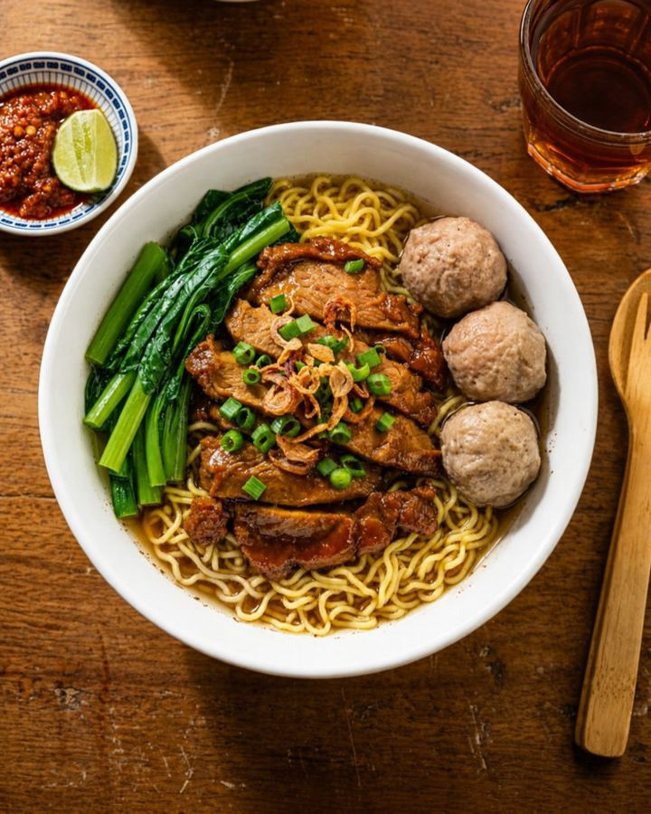

Bakso Pak DarmoPesan
Bakso urat kuah kaldu sapi asli
Dimasak sejak subuh, pentol urat digiling sendiri setiap hari. Makan di tempat atau pesan antar lewat WA.
Pesan lewat WhatsAppBuka 09.00–21.00Antar radius 5 kmHalal

Dimasak sejak subuh, pentol urat digiling sendiri setiap hari. Makan di tempat atau pesan antar lewat WA.
Pesan lewat WhatsApp
Tiga hal yang kami jaga sejak hari pertama.
Tulang sapi direbus pelan sejak subuh, tanpa penyedap berlebihan.
Daging pilihan, urat terasa, tekstur kenyal.
Kuah dan isi dipisah supaya sampai rumah tetap segar.
Harga sudah termasuk kuah, mi, dan sayur.

Contoh tampilan ulasan.
★★★★★Kuahnya gurih tapi tidak bikin haus. Langganan tiap pulang kerja.Pelanggan A
★★★★★Pesan antar lewat WA, datang masih panas. Uratnya mantap.Pelanggan B
★★★★★Porsi jumbo beneran jumbo. Anak-anak suka.Pelanggan C